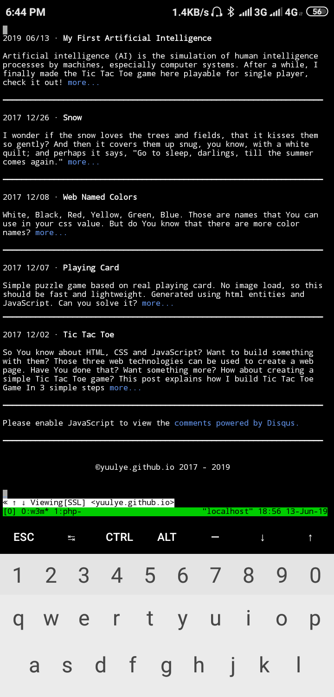
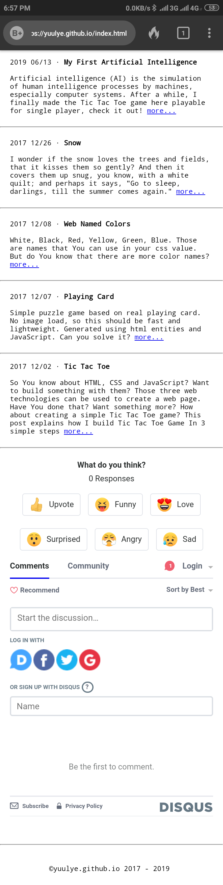
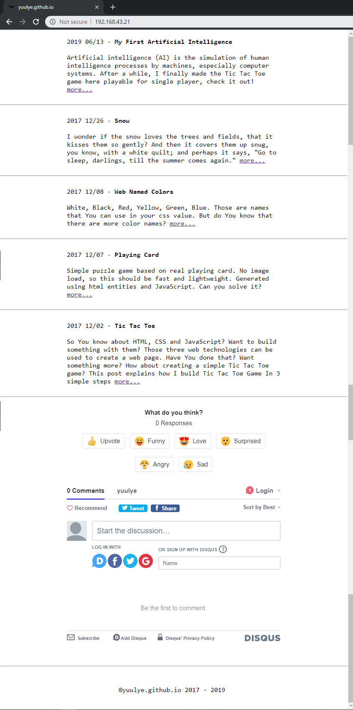

So, I started with the terminal based browser that I "can" use, w3m.

And then, as the Bootstrap approach which is mobile-first, let's see the default mobile view and that is in portrait mode.

Next view is on the mobile wide.

Last but not least, desktop.
